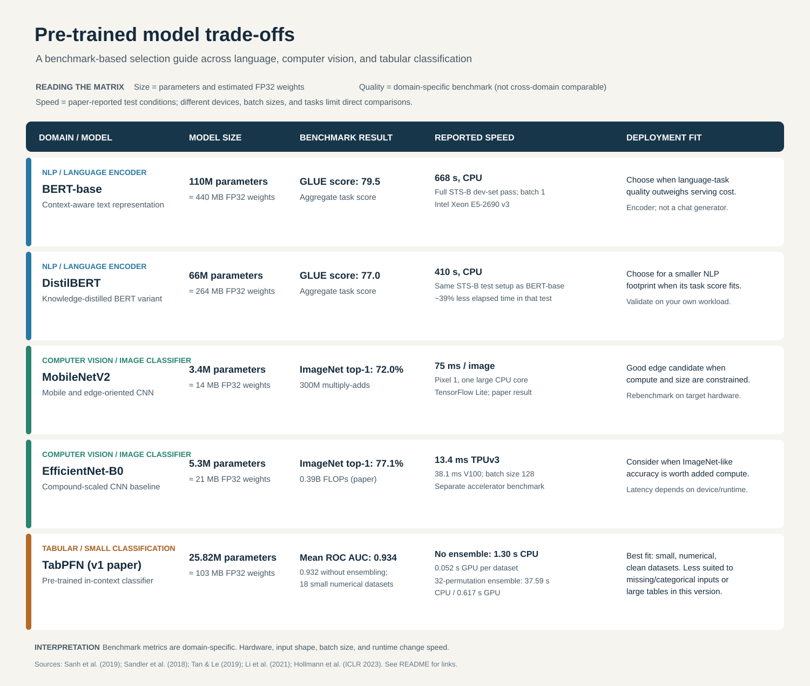

Pre-Trained Model Trade-Offs
A benchmark-based selection guide across language, computer vision, and tabular classification. The comparison focuses on size, task quality, speed, deployment fit, and explainability.
How to read this: benchmark scores are task-specific. Speed results retain the hardware and test conditions reported by each paper; they should not be ranked as though they came from one standardized test.

What the comparison shows
- NLP:DistilBERT uses fewer parameters and ran faster than BERT-base in the cited CPU test, while scoring lower on GLUE.
- Vision:MobileNetV2 is a compact edge-oriented model. EfficientNet-B0 reports higher ImageNet top-1 accuracy, but its latency figures use a different hardware and batch setup.
- Tabular:TabPFN performs strongly on the paper’s small numerical benchmark; its dataset limits and weaker performance with missing or categorical inputs matter for deployment.
Trustworthiness needs more than one score
Task quality, calibration, robustness, safety, subgroup fairness, and explanation fidelity are distinct evaluation questions. Attention maps, feature-importance displays, or generated reasoning text can support investigation, but they are not automatically evidence that an explanation faithfully represents a model’s internal reasoning. Human review remains important where model errors can have meaningful consequences.
Selection takeaway
There is no universal winner. Narrow candidates using published results, then test them on representative data with the intended hardware, latency targets, memory limits, explanation needs, and error costs.